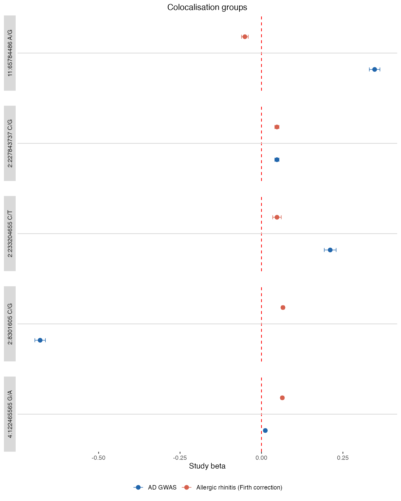
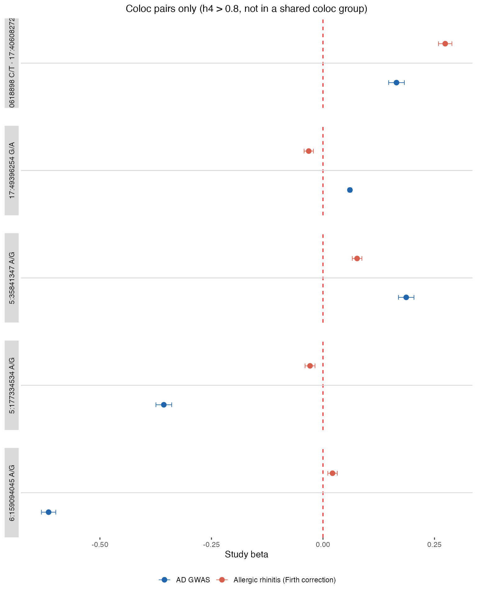

GPMap tutorial: GWAS upload
tutorial-gwas-upload.RmdThe GPMap API allows you to upload your own GWAS summary statistics and receive colocalisation results against the existing GPMap. This vignette covers how to upload a GWAS, retrieve your results, interpret them, and compare your upload with another trait (including another upload) to find insights.
Uploading a GWAS
Use gpmapr::upload_gwas() to submit your summary
statistics. You need a file with standard GWAS columns and metadata such
as sample size and ancestry.
# Example: upload a GWAS file
result <- gpmapr::upload_gwas(
file = "path/to/your_gwas.tsv.gz",
name = "Specific Triat",
p_value_threshold = 5e-8,
column_names = list(
CHR = "chr",
BP = "pos",
P = "pval",
EA = "effect_allele",
OA = "other_allele",
EAF = "eaf",
BETA = "beta",
SE = "se"
),
email = "your@email.com",
category = "continuous",
ancestry = "EUR",
sample_size = 50000,
reference_build = "GRCh38"
)You can also compare your upload with another upload by passing the
GUIDs of the uploads you want to compare with, by including
compare_with_upload_guids = c("GUID1").
The response includes a GUID (a UUID such as
a1b2c3d4-e5f6-7890-abcd-ef1234567890). Save this GUID; you
use it to fetch your results once they are ready.
# The GUID is returned in the response
my_guid <- result$idFetching your results
Processing can take some time. Use the GUID with trait()
to check status and retrieve results. Here we will use an GWAS that has
already been uploaded to the GPMap.
This is of Atopic Dermatitis.
my_guid <- "7a289615-c1b4-91f3-3d97-887f60de9155"
my_results <- gpmapr::trait(my_guid, include_associations = TRUE)When processing is complete, the result includes trait,
coloc_groups, study_extractions,
upload_study_extractions, and optionally
associations and coloc_pairs.
Interpreting your results
Much of the same analysis that is shown in the case study can be applied to your upload results. If you are interested in the relationship between your upload and another trait, you can filter the coloc groups by trait id.
Your upload results use the same structure as traits in the database. Here are the main components and what they mean.
Study extractions
The difference between study_extractions and upload_study_extractions is that upload_study_extractions are the individual finemapped regions (LD blocks) that were found from the uploaded GWAS, while study_extractions are the existing finemapped loci that your upload colocalises with.
Key columns include study, snp,
gene, chr, bp,
min_p, and trait metadata (trait_name,
data_type, tissue).
# Study extractions (structure may vary - list of dataframes or single dataframe)
uploaded_study_extractions <- my_results$upload_study_extractions
paste("Number of uploaded study extractions:", nrow(uploaded_study_extractions))
#> [1] "Number of uploaded study extractions: 144"
study_extractions <- my_results$study_extractions
paste("Number of study extractions associated with your upload:", nrow(study_extractions))
#> [1] "Number of study extractions associated with your upload: 3854"Coloc groups and coloc pairs
Although coloc groups provide a more robust view of the relationship between your trait and other traits, coloc pairs can be useful for identifying the specific regions that are driving the colocalisation, espeically if the loci is less powered, and therefore less likely to be captured by the coloc groups.
Coloc groups identify genomic regions (LD blocks) where your trait colocalises with other studies in the map. Each row is a study extraction that shares a colocalisation signal with your trait at that region.
If you are interested in the relationship between your trait and another specific trait, you can filter the coloc groups by trait id.
trait_to_compare <- 2527L # Allergic rhinitis
upload_id <- my_results$trait$id
upload_name <- as.character(my_results$trait$name)[[1L]]
compare_name <- {
nm <- my_results$coloc_groups |>
dplyr::filter(trait_id == trait_to_compare) |>
dplyr::distinct(trait_name) |>
dplyr::pull(trait_name)
if (length(nm) >= 1L) nm[[1L]] else "Comparison trait"
}
shared_coloc_groups <- my_results$coloc_groups |>
dplyr::filter(trait_id == trait_to_compare) |>
dplyr::pull(coloc_group_id) |>
unique()
compare_coloc_groups <- my_results$coloc_groups |>
dplyr::filter(
coloc_group_id %in% shared_coloc_groups,
trait_id == trait_to_compare | gwas_upload_id == upload_id
)
compare_coloc_groups <- compare_coloc_groups |>
dplyr::group_by(coloc_group_id) |>
dplyr::filter(!any(se == 1)) |>
dplyr::ungroup()
# Strongest hit (smallest min_p) per group per side
pick_lead <- function(dat, grp_col) {
dat |>
dplyr::filter(!is.na(beta), !is.na(se), se > 0, !is.na(min_p)) |>
dplyr::group_by(dplyr::across(dplyr::all_of(grp_col))) |>
dplyr::slice_min(order_by = min_p, n = 1L, with_ties = FALSE) |>
dplyr::ungroup()
}
trait_colours <- c("#2166ac", "#d6604d")
names(trait_colours) <- c(upload_name, compare_name)
make_forest_plot <- function(df, panel_labels, title_str) {
lbl_fn <- function(x) {
m <- match(as.character(x), as.character(panel_labels$group_id))
out <- panel_labels$strip_lbl[m]
dplyr::if_else(is.na(out), as.character(x), out)
}
ggplot2::ggplot(df, ggplot2::aes(x = beta, y = trait_lbl, colour = trait_lbl)) +
ggplot2::geom_vline(xintercept = 0, colour = "red", lty = 2) +
ggplot2::geom_hline(yintercept = 1.5, colour = "grey85", linewidth = 0.5) +
ggplot2::geom_errorbar(
ggplot2::aes(xmin = beta - 1.96 * se, xmax = beta + 1.96 * se),
width = 0.12, linewidth = 0.35
) +
ggplot2::geom_point(size = 2.5) +
ggplot2::facet_grid(
rows = ggplot2::vars(coloc_panel),
scales = "fixed", space = "fixed", switch = "y",
labeller = ggplot2::labeller(coloc_panel = lbl_fn)
) +
ggplot2::scale_y_discrete(expand = ggplot2::expansion(add = 0.65)) +
ggplot2::scale_colour_manual(values = trait_colours,
breaks = c(upload_name, compare_name)) +
ggplot2::theme_bw() +
ggplot2::theme(
panel.grid = ggplot2::element_blank(),
panel.border = ggplot2::element_blank(),
panel.spacing.y = grid::unit(1.5, "lines"),
strip.background = ggplot2::element_rect(colour = NA),
strip.placement = "outside",
plot.title = ggplot2::element_text(hjust = 0.5, size = 12),
legend.position = "bottom",
axis.text.y = ggplot2::element_blank(),
axis.ticks.y = ggplot2::element_blank()
) +
ggplot2::labs(x = "Study beta", y = NULL, colour = NULL, title = title_str)
}
make_strip_labels <- function(df) {
df |>
dplyr::group_by(group_id) |>
dplyr::summarise(
strip_lbl = paste(unique(stats::na.omit(display_snp)), collapse = " · "),
.groups = "drop"
) |>
dplyr::mutate(strip_lbl = dplyr::if_else(
nzchar(strip_lbl), strip_lbl, as.character(group_id)
))
}
build_forest_df <- function(upload_rows, compare_rows, max_groups = 5L) {
df <- dplyr::bind_rows(
upload_rows |> dplyr::mutate(trait_lbl = upload_name),
compare_rows |> dplyr::mutate(trait_lbl = compare_name)
) |>
dplyr::mutate(trait_lbl = factor(trait_lbl, levels = c(upload_name, compare_name)))
ids_both <- df |>
dplyr::count(group_id, name = "n") |>
dplyr::filter(n == 2L) |>
dplyr::slice_head(n = max_groups) |>
dplyr::pull(group_id)
df |>
dplyr::filter(group_id %in% ids_both) |>
dplyr::mutate(coloc_panel = factor(group_id))
}
# --- Section 1: Coloc groups ---
cg_upload <- compare_coloc_groups |>
dplyr::filter(gwas_upload_id == upload_id) |>
pick_lead("coloc_group_id") |>
dplyr::mutate(group_id = as.character(coloc_group_id))
cg_compare <- compare_coloc_groups |>
dplyr::filter(trait_id == trait_to_compare) |>
pick_lead("coloc_group_id") |>
dplyr::mutate(group_id = as.character(coloc_group_id))
cg_df <- build_forest_df(cg_upload, cg_compare)
if (nrow(cg_df) > 0) {
print(make_forest_plot(
cg_df, make_strip_labels(cg_df),
"Colocalisation groups"
))
}
# --- Section 2: Coloc pairs only (h4 > 0.8, locus not in shared coloc groups) ---
pairs_all <- my_results$coloc_pairs
if (!is.null(pairs_all) && nrow(pairs_all) > 0 && "h4" %in% names(pairs_all) &&
"ld_block_id" %in% names(pairs_all)) {
covered_ld <- compare_coloc_groups |>
dplyr::pull(ld_block_id) |>
unique()
sig_ld <- pairs_all |>
dplyr::filter(h4 > 0.8, !ld_block_id %in% covered_ld) |>
dplyr::pull(ld_block_id) |>
unique()
if (length(sig_ld) > 0) {
cp_upload <- my_results$coloc_groups |>
dplyr::filter(gwas_upload_id == upload_id, ld_block_id %in% sig_ld) |>
pick_lead("ld_block_id") |>
dplyr::mutate(group_id = as.character(ld_block_id))
cp_compare <- my_results$coloc_groups |>
dplyr::filter(trait_id == trait_to_compare, ld_block_id %in% sig_ld) |>
pick_lead("ld_block_id") |>
dplyr::mutate(group_id = as.character(ld_block_id))
cp_df <- build_forest_df(cp_upload, cp_compare)
if (nrow(cp_df) > 0) {
print(make_forest_plot(
cp_df, make_strip_labels(cp_df),
"Coloc pairs only (h4 > 0.8, not in a shared coloc group)"
))
}
}
}
Coloc pairs give pairwise colocalisation probabilities between study extractions:
- h4: Both traits share one common causal variant
- h3: Both traits associate at the region through two distinct causal variants
The forest plot above already includes loci with h4 > 0.8 that are not captured by any shared coloc group. The raw pair scores for all significant pairs are shown below.
truncate_results <- 20L
pairs <- my_results$coloc_pairs
if (!is.null(pairs) && nrow(pairs) > 0) {
cols <- intersect(names(pairs), c(
"study_extraction_id_a", "study_extraction_id_b",
"existing_study_extraction_id_a", "existing_study_extraction_id_b",
"ld_block_id", "h3", "h4", "false_positive", "spurious"
))
knitr::kable(
head(dplyr::filter(pairs[, cols, drop = FALSE], h4 > 0.8), truncate_results),
digits = 3
)
} else {
"No coloc pairs for these traits"
}| existing_study_extraction_id_a | study_extraction_id_a | existing_study_extraction_id_b | study_extraction_id_b | ld_block_id | h3 | h4 | false_positive |
|---|---|---|---|---|---|---|---|
| NA | 7293 | 46415 | NA | 9 | 0.083 | 0.882 | FALSE |
| NA | 7293 | 49939 | NA | 9 | 0.117 | 0.879 | FALSE |
| NA | 7293 | 50071 | NA | 9 | 0.003 | 0.996 | FALSE |
| NA | 7293 | 50085 | NA | 9 | 0.086 | 0.911 | FALSE |
| NA | 7294 | 276438 | NA | 58 | 0.002 | 0.998 | FALSE |
| NA | 7294 | 276555 | NA | 58 | 0.069 | 0.931 | FALSE |
| NA | 7294 | 276582 | NA | 58 | 0.002 | 0.998 | FALSE |
| NA | 7295 | NA | 7296 | 59 | 0.000 | 1.000 | FALSE |
| NA | 7297 | NA | 7298 | 59 | 0.000 | 1.000 | FALSE |
| NA | 7303 | 281882 | NA | 60 | 0.067 | 0.933 | FALSE |
| NA | 7303 | 282948 | NA | 60 | 0.064 | 0.936 | FALSE |
| NA | 7303 | 283008 | NA | 60 | 0.071 | 0.929 | FALSE |
| NA | 7303 | 283259 | NA | 60 | 0.057 | 0.943 | FALSE |
| NA | 7303 | 289880 | NA | 60 | 0.097 | 0.903 | FALSE |
| NA | 7303 | 291699 | NA | 60 | 0.047 | 0.952 | FALSE |
| NA | 7303 | 291703 | NA | 60 | 0.127 | 0.872 | FALSE |
| NA | 7303 | 296454 | NA | 60 | 0.039 | 0.960 | FALSE |
| NA | 7303 | 296463 | NA | 60 | 0.052 | 0.948 | FALSE |
| NA | 7303 | 296756 | NA | 60 | 0.025 | 0.975 | FALSE |
| NA | 7303 | 296758 | NA | 60 | 0.047 | 0.953 | FALSE |